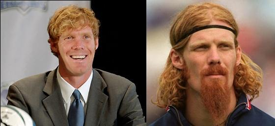

Chương Mười Bảy

ì sao Beckham sang Mỹ?
Tiền đương nhiên là một lý do. Theo thỏa thuận với Galaxy, David nhận 32.5 triệu đô la[1] trong vòng 5 năm. Ngoài lương, anh còn nhiều khoản bổng khác rất lớn, như được Galaxy chia lợi nhuận từ tiền bán vé và bán áo. Tính tổng cộng, hợp đồng 5 năm tại MLS có thể đem về cho David đến 250 triệu đô. Xu hướng của các lão tướng là dạt về những vùng “kém phát triển” để dưỡng già và…hưởng lương cao ngất, David cũng không phải ngoại lệ. Khi hợp đồng với Real kết thúc, anh đã 32 tuổi. Có người nói 32 chưa phải quá già, song già hay trẻ trong bóng đá là một khái niệm khá tương đối. Paolo Maldini hay Ryan Giggs vẫn có thể tung hoành trên sân ở tuổi 39 – 40, nhưng nhiều ngôi sao khác, như Michel Platini hay Eric Cantona, mới 31 – 32 đã giải nghệ.
Lý do thứ hai là Victoria. Đối với giới showbiz, Mỹ là thị trường tối thượng, chưa chinh phục được thị trường Mỹ thì chưa thể trở thành siêu sao. Dù với tư cách ca sỹ hay nhà thiết kế thời trang, với Victoria, làm việc tại Mỹ luôn mở ra nhiều cơ hội hơn ở Anh hay TBN. Không phải ngẫu nhiên David lại sang Galaxy đúng vào lúc nhóm Spice Girls tái hợp, chuẩn bị lưu diễn vòng quanh thế giới, với điểm nhấn chính là Bắc Mỹ. AEG, chủ quản của Galaxy, cũng là công ty tổ chức các show diễn cho Spice Girls.
Một lý do nữa: Bản thân David cũng muốn chinh phục thị trường Mỹ. Đây là một tham vọng táo bạo, bởi tại Mỹ, bóng đá rất ít được quan tâm, đứng xa lơ xa lắc phía sau bóng bầu dục, bóng chày, và bóng rổ. Biết bao siêu sao bóng đá từng đến Mỹ, từ “Vua” Pele, “Hoàng Đế” Beckenbauer, cho đến Johan Cruyff, George Best, Carlos Alberto, Lothar Matthaeus, chẳng ai làm dân Mỹ mê bóng đá thêm được tẹo nào. Truyền “túc cầu giáo” cho người Mỹ là một nhiệm vụ cực khó, nhưng nếu thành công tức là khai phá được một tiềm năng vô cùng tận. David biết Mỹ không thể trở thành… Brazil, anh chỉ hy vọng đưa nền bóng đá ở đây lên một tầm cao mới, cao hơn mức cũ một chút. Nhiều người Mỹ hâm mộ Beckham mà không hiểu biết gì về bóng đá, chỉ cần “giác ngộ” được những người này đã là thành công rồi.
Tuy nhiên, trước khi theo dõi cuộc phiêu lưu của David tại Galaxy, cần tìm hiểu qua về những luật lệ của giải bóng đá nhà nghề Mỹ, bởi MLS là một thứ…quái thai, “quái đản nhi độc lập”[2] trong làng bóng tròn thế giới, nếu không hiểu về luật lệ giải, đọc những chương sau sẽ thấy rối mù.
Học viện bóng đá David Beckham (Ảnh: Moblog)
Theo điều lệ MLS, các CLB tham dự giải VĐQG được chia làm hai nhóm: Nhóm miền Đông và nhóm miền Tây, đấu vòng tròn với nhau. Đội nào chung nhóm sẽ gặp nhau 3 lần một mùa, khác nhóm thì chỉ gặp một lần. Có 3 bảng xếp hạng riêng biệt: miền Đông, miền Tây, và quốc gia. Đội nhiều điểm nhất miền Đông được trao chức vô địch miền Đông, nhiều điểm nhất miền Tây được trao chức vô địch miền Tây, nhiều điểm nhất trên cả quốc gia thì nhận danh hiệu gọi là MLS Supporters’ Shield.
Nhưng chưa hết, cả ba danh hiệu kể trên đều là…cò con, bởi 8 đội nhiều điểm nhất loạt đấu vòng tròn sẽ giành quyền vào vòng play-off[3]. Đội thắng vòng play-off mới được coi là nhà vô địch nước Mỹ. Vì cái quy định lạ đời này nên ở loạt đấu vòng tròn, các đội thường đá rất lè phè. Tội gì phí sức, chỉ cần đứng hạng 8 là đủ rồi mà!
Tại MLS, nếu một cầu thủ không phải ngôi sao, anh ta không phải là…người, không có quyền căn bản của một con người, mà chỉ là một thứ đồ vật để các CLB đổi chác với nhau. Chẳng hạn, một cầu thủ trẻ lần đầu tiên chơi bóng chuyên nghiệp ở Mỹ sẽ không có quyền chọn lựa CLB, mà phải ký hợp đồng với MLS. Sau đó, MLS cho quay xổ số, CLB nào quay trúng sẽ được cầu thủ đó. Tương tự như vậy, nếu một CLB nào lần đầu tham dự MLS, họ được quyền chọn 10 cầu thủ từ các CLB khác. Giả dụ như hiện tại MLS có 3 “ma cũ” là các đội A, B, C, và một “ma mới” là D. D sẽ được phép lấy 10 người từ A, B, và C. A, B, và C có quyền “bảo vệ” 12 cầu thủ, không cho D xâm phạm đến. Ngoài những cầu thủ được “bảo vệ” đó ra, D muốn lấy ai thì lấy. Những cầu thủ bị D chọn thì phải sang D, không được phép từ chối[4].
Ban điều hành MLS đều là những ông bầu giàu có, nhưng họ lại liên kết với nhau làm thói “tư bản dã man”, bóc lột cầu thủ. Các CLB thuộc MLS đều phải tuân thủ quy định mức lương trần. Khi Beckham đến Mỹ, quỹ lương của mỗi CLB chỉ được lên đến tối đa 2.1 triệu đô một năm, so với hàng trăm triệu của các CLB lớn ở châu Âu. Với quỹ lương “ăn mày” như vậy, sở dĩ Galaxy ký được hợp đồng với David là vì vào tháng 11 năm 2006, MLS ban hành luật mới, cho phép mỗi CLB được thuê một cầu thủ đặc biệt, trả lương cho cầu thủ ấy cao bao nhiêu tùy ý. Luật này được dân gian đặt cho cái tên là “Luật Beckham”.
Quy định mức lương trần gây nên chênh lệch cực lớn trong nội bộ mỗi CLB, cả về giàu nghèo lẫn về trình độ. Chỉ trả lương cho vài trụ cột thôi đã gần hết quỹ rồi, nên các đội chỉ có thể dùng phần còn lại để thuê những cầu thủ hoặc mới ra ràng, hoặc hết đát từ lâu, hoặc đang độ chín nhưng kỹ năng chỉ ở tầm hạng bét. Đội nào dè xẻn hết mức mà lương vẫn vượt trần thì chỉ có cách “tinh giản biên chế”. Nhiều CLB thuộc MLS chỉ có 16-17 cầu thủ là vậy.
Người ta nhận xét rất đúng: Trong một CLB nhà nghề Mỹ, chỉ có giai cấp thượng lưu và hạ lưu, hoàn toàn không có trung lưu. Có nghĩa là CLB bao gồm một vài ngôi sao cộng với một đám “thiểu năng bóng đá”. Trong bối cảnh như vậy thì dù có là sao cũng khó lòng tỏa sáng. Chúng ta hãy cùng xem bảng dưới đây:
|
Bảng Lương Cầu Thủ Ở Los Angeles Galaxy Năm 2007 |
|
|
Tên Cầu Thủ |
Lương Đồng Niên (Đô La) |
|
David Beckham |
6 500 000 |
|
Landon Donovan |
900 000 |
|
Joe Cannon |
192 000 |
|
Chris Klein |
187 250 |
|
Abel Xavier |
156 000 |
|
… |
… |
|
Mike Randolph |
17 700 |
|
Kyle Veris |
17 700 |
|
Mike Caso |
12 900 |
|
Lance Friesz |
12 900 |
(Wahl 2009)
Phía trên là bảng lương của Galaxy năm 2007 (chỉ thể hiện nửa trên và dưới cùng). Ta thấy khoảng cách giữa người thứ nhất, Beckham, và thứ hai, Donovan, thật xa diệu vợi. Nhưng David là cầu thủ đặc biệt không kể, Landon Donovan nhận 900 000 đô là rất cao ở MLS rồi, khoảng cách từ Donovan đến người thứ ba, Cannon, cũng rất bao la. Những cầu thủ đứng cuối chỉ nhận lương mười mấy ngàn đô.
Mười mấy ngàn đô? Thật đấy, trong khi David lãnh hàng triệu, mỗi trận thay một đôi giày, thì đồng đội anh được trả có thế thôi. Lương mười mấy ngàn đô một năm trên đất Mỹ thì chỉ chết đói. Thế nên, tuy danh nghĩa là chuyên nghiệp, đa số cầu thủ phải làm thêm nghề khác mới đủ sống. Ở Anh, một cầu thủ trẻ mới lên đội một đã có thể mua được nhà, còn chơi cho MLS thì có đá 10 năm vẫn chỉ ở thuê.
Một điểm cũng cần lưu ý: Thông thường, HLV trưởng một CLB MLS không có bao nhiêu quyền lực. Hãy lấy Galaxy làm ví dụ, HLV đội là Frank Yallop, nhưng Yallop phải phục tùng tổng giám đốc Alexi Lalas (chính là anh chàng hậu vệ râu dê nổi danh một thời của ĐTQG Mỹ). Sau một lần thua trận, các cầu thủ từng nghe Lalas quát vào mặt Yallop:
-ĐM, đá cái đ gì thế hả?
Cứ tưởng tượng Martin Edwards ăn nói như thế với Sir Alex Ferguson!
Song nên nhớ Galaxy thuộc quyền sở hữu của AEG, nên Tim Leiweke nói gì thì Lalas phải nghe nấy. Ta đã thấy trong việc mua Beckham, Leiweke là người lo liệu mọi việc từ A đến Z, Lalas và Yallop hoàn toàn không được “ý kiến ý cò” gì. Nếu truy nguyên tận cùng, trên Leiweke còn có tỷ phú Philip Anschutz, đại gia trong các lãnh vực dầu mỏ, đường sắt, viễn thông, truyền thông, giải trí, và thể thao. Anschutz là một trong những nhà sáng lập giải nhà nghề Mỹ, từng có lúc sở hữu một lúc 6 CLB MLS (Bầu Hiển của Việt Nam phải gọi bằng sư phụ!). Có điều, do bận bịu kinh doanh, việc điều hành đội bóng Anschutz không can thiệp, mà giao cả cho Leiweke…
Vì bạn đọc có lẽ nhiều người chỉ rành bóng đá châu Âu, không quen thuộc với giải Mỹ, nên phải giải thích dông dài, từ chương sau, xin trở lại với nhân vật chính David Beckham.

Alexi Lalas, xưa (phải) và nay (trái). Ảnh: Forzafutbol.
Chú thích:
[1] Từ đây trở đi, vì Beckham đã sang Mỹ, khi nhắc đến đơn vị tiền tệ, chúng tôi dùng đô la thay vì bảng. Theo tỷ giá hiện thời (tháng 7, 2013), 1 bảng Anh ăn khoảng 1.5 đô Mỹ.
[2] Lý Diên Niên đời Hán có câu “Bắc phương hữu giai nhân/ Tuyệt thế nhi độc lập”. Khi viết chương này, chúng tôi bỗng có hứng, muốn sửa thành “Bắc phương hữu Mỹ nhân/ Quái đản nhi độc lập” (Phương Bắc có người Mỹ, quái đản đứng một mình).
[3] Thời Beckham là 8 đội, hiện nay (2013) đã tăng lên 10 đội.
[4] Ở đây chỉ giải thích sơ lược. Nếu đi sâu vào điều lệ thì còn phức tạp hơn thế nhiều, chúng tôi không hiểu, và đa số các cầu thủ cũng như HLV ở Mỹ đều không hiểu!